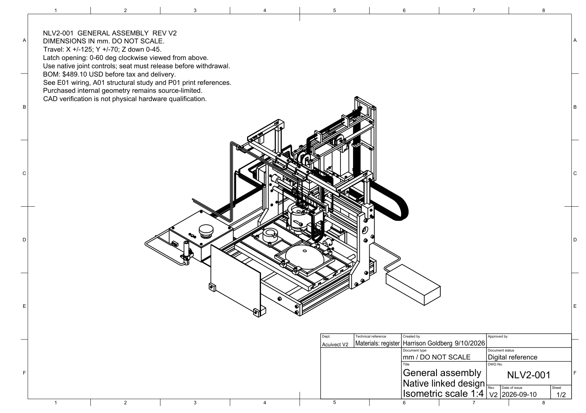
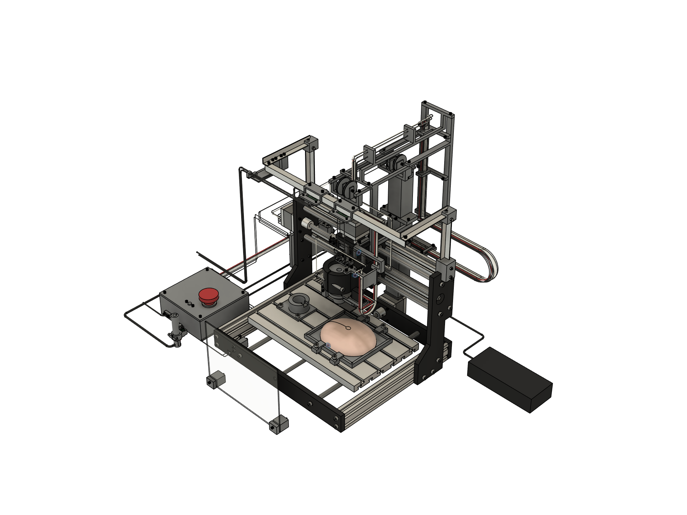
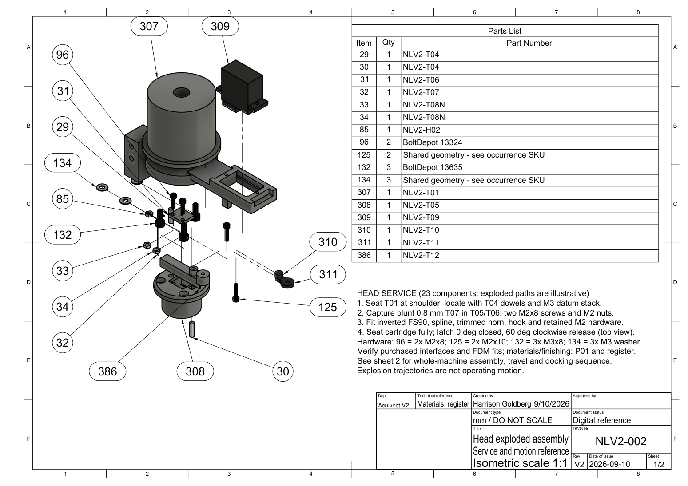
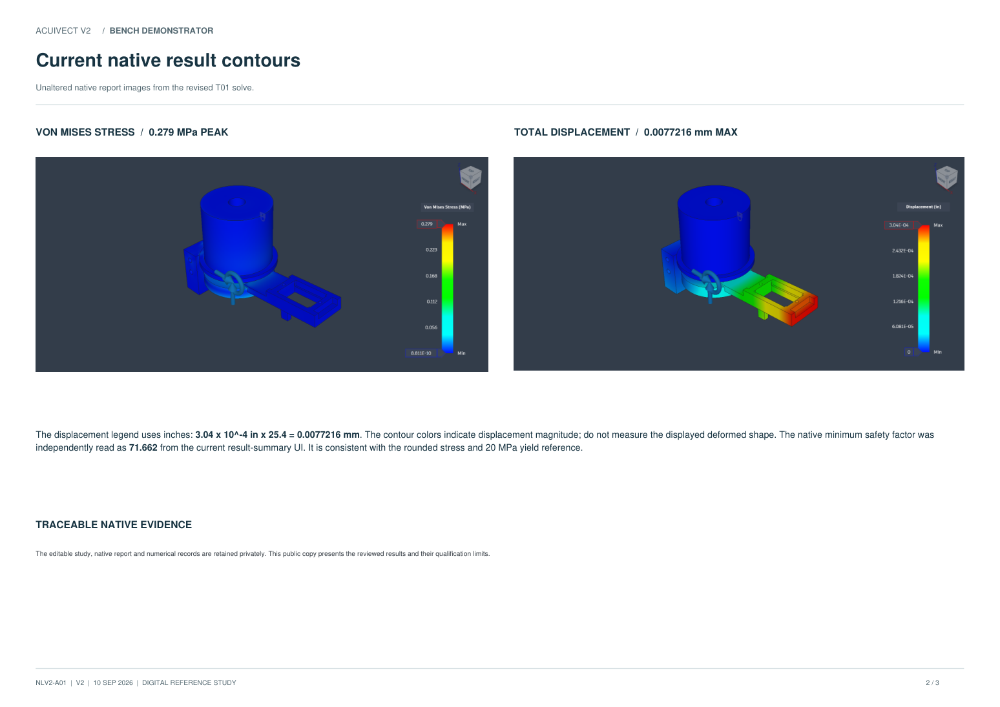

Drawing / 2 sheets
General assembly
Native isometric and first-angle orthographic views with nominal motion references.
View general assembly PDF ↗Precision Insertion
Demonstrator
A benchtop system for controlled motion, camera-to-tool alignment and removable probe tooling on a synthetic brain phantom.

Explore the complete 723-part assembly with the same controls and rendering as the desktop virtual lab. Jog the axes, transfer the cartridge, choose a phantom target, run an insertion cycle and record or replay a sequence.
Camera views, exploded inspection, material and part details, sensors and adjustable dynamics are included. Your simulation runs independently in your browser.
Full-detail model · approximately 100 MB on first load · current browser with WebGL required.
CAD geometry. Estimated mechanics.
The displayed meshes reproduce the verified local simulator exactly after lossless decoding. The browser controller is checked against its original motion and physics traces. Friction, backlash, drive response and gel force remain adjustable estimates; physical performance has not been measured.
Interactive display meshes are part of this public release. Editable Fusion originals remain private.
Acuivect explores the integration of XYZ positioning, camera registration and a serviceable insertion cartridge. Its second revision adapts a commercial Genmitsu 3018-PRO motion platform with custom tooling, camera supports, a cartridge dock and electronics packaging.
The dock and synthetic phantom share the moving Y table. Camera calibration and motion therefore need a consistent table reference frame. The cartridge sequence was checked digitally through docking, head withdrawal and reseating.
Read the case studyDigital design complete. Hardware awaits funding.
The physical build is deferred due to budget. The recorded $489.10 parts estimate exceeds the original $400 goal; it excludes tax and shipping. The next stage is building and measuring the actual system.
AI-assisted workflows supported the creation of this project.
Selected public review copies from the completed engineering set. Open the PDFs for full pages, dimensions and qualifications.

Native isometric and first-angle orthographic views with nominal motion references.
View general assembly PDF ↗
Exploded head service reference, assembly order and cartridge docking sequence.
View assembly and motion PDF ↗
Native result contours, material assumptions, load case and study limitations.
View structural review PDF ↗250 × 140 × 45 mm
Total X / Y / downward Z
120 × 100 × 26 mm
Synthetic test medium
Seated cartridge
Servo latch and table-mounted dock
Two USB cameras
Physical calibration pending
28 joints · 8 motion links
19 rigid groups
69 unique shapes
Physical printing pending
These results do not establish complete-machine accuracy, real print strength or physical stability. The revised head has one current mesh solve; peak-stress convergence is not claimed.
Validation results and remaining hardware testsBudget is the reason the hardware has not yet been built. The digital assembly and documentation are complete. When funds are available, the next steps are purchased-part inspection, print-fit calibration, assembly, staged commissioning and measured synthetic-phantom trials.
The $400 design goal was exceeded by $89.10 before tax and shipping. A separate $50 delivery reserve gives a $539.10 planning total. Existing computer, printer and workshop tools are assumed.
Budget assumptions and estimate date| Category | USD |
|---|---|
| Motion-platform kit | $159.00 |
| Two cameras | $59.98 |
| PETG stock, 2 kg | $27.98 |
| Other controls, hardware and consumables | $242.14 |
| Parts total | $489.10 |
{kind=link}